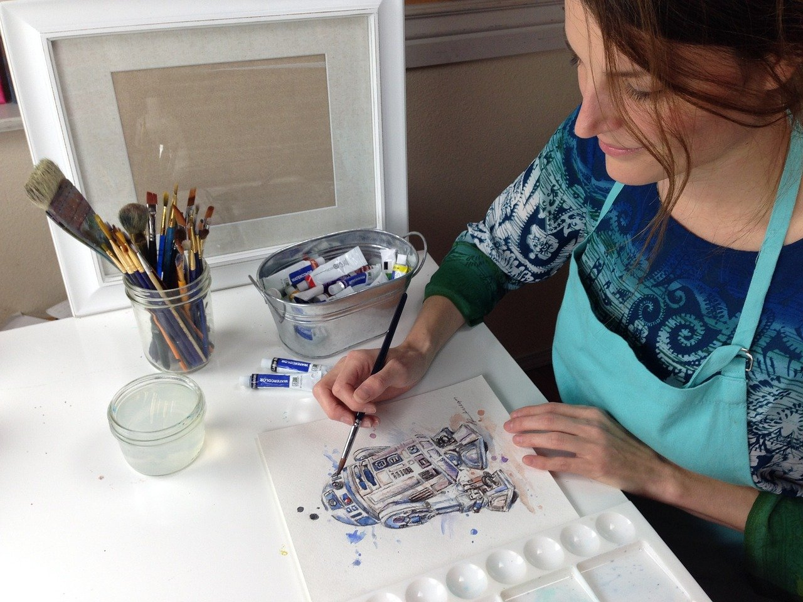
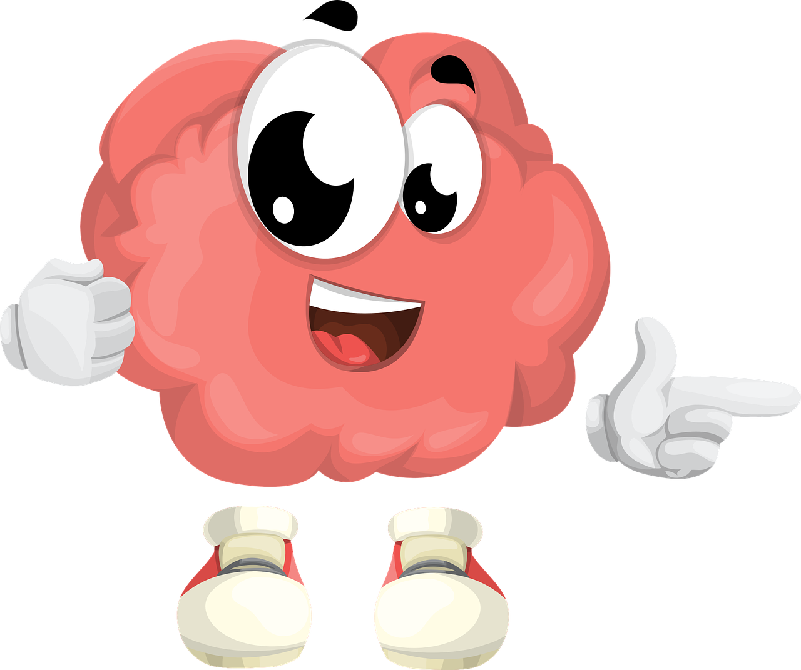

Pra mim pintar é uma das Paixões da Minha vida Toda, e é o meu hobbie preferido!

artista pintando
Telas que já pintei por ordem:
Garota no balanço
Por do Sol Cor-de-Rosa
Girassol no Verão
Alguns benefícios da pintura
pincel e espátula para pinturas em tela
Faz bem para o psicológico
Combate o Stress
Por qual motivo pintar faz bem para o psicológico?

Cérebro feliz
Pintar estimula a parte do cérebro relacionada ao sistema de recompensa. Isso quer dizer que pintar desperta o prazer, o alívio e a satisfação consigo mesmo!
Por qual motivo pintar alivia o Stress?
homem pintando uma tela na praia
Pintar ajuda tanto no combate do stress e da ansiedade, como de outros problemas. Além de reduzir o nível de Stress, distraindo as pessoas dos conflitos e confusões do dia a dia, também ajuda elevando a autoestima e a criatividade da pessoa que exerce esta atividade!